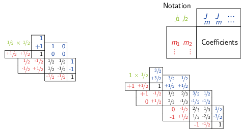
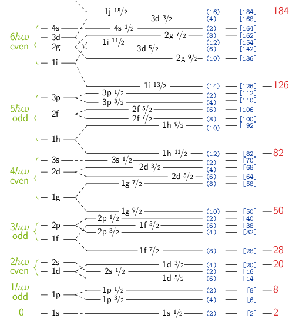

Annexes
1 Rappels de relativité restreinte
1.1 Paramètres de Lorentz
Pour une particule de masse \(m\) :
\begin{align*} \beta = \frac{v}{c} = \frac{pc}{E} \quad \gamma = \frac{1}{\sqrt{1-\beta^2}}=\frac{E}{m_0c^2} \end{align*}1.2 Énergie des particules
- Énergie de masse au repos : \(E_0 = m_0 c^2\), Énergie totale : \(E = mc^2 = \gamma m_0 c^2 = T + m_0 c^2\)
- Énergie cinétique \(T = (\gamma - 1) m_0 c^2\)
- Pour une particule, on a \(\vv{p}^2c^2 = T(T + 2 m_0 c^2)\) et \(E^2 - {\vv{p}}^2c^2 = m_0^2 c^4\)
- Pour un système de \(n\) particules, la quantité \((\sum_{i=1}^{n} E_i)^2 - (\sum_{i=1}^n \vv{p})^2 c^2\) est un invariant dans tout changement de référentiel.
Pour des particules de masse nulle (\(\beta\) = 1, \(\gamma\rightarrow\infty\))
\begin{align*} E = pc = h\nu \end{align*}
1.3 Transformation de Lorentz
\(\{ X^{\mu}\}\) et \(\{ X^{\mu \prime}\}\) sont les composantes d'un même quadrivecteur dans les référentiels S (labo) et S'(CdM). S' est animé d'un mouvement de translation de vitesse \(v = \beta c\) le long de l'axe \(Oz\) de S. La transformation inverse s'obtient en changeant \(\beta\) en \(-\beta\).
1.4 Quadrivecteurs
1.5 Invariants
Produit scalaire de deux quadrivecteurs : \(X^0 Y^0 - X^1 Y^1 - X^2 Y^2 - X^3 Y^3\)
Temps propre : \(c^2 \d\tau^2 = c^2 \d t^2 - \d x^2 -\d y^2 - \d z^2\)
Masse effective : \(m^2 c^4 = E^2 - \vv{p}^2c^2 = E^2 - p_x^2 c^2 - p_y^2c^2 - p_z^2c^2\)
2 Tableau des coefficients de Clebsh-Gordan
On ne donne ci-dessous que les coefficients de Clebsh-Gordan utilisables en TD. Tous les coefficients \(C\) donnés dans cette table doivent être lus comme \(\sqrt{C}\).

Par exemple, le coefficient correspondant à \(j_1\) = 1, \(j_2\) = \nicefrac{1}{2}, \(m_1\) = 1, \(m_2\) = \nicefrac{-1}{2}, \(J\) = \nicefrac{3}{2}, \(M\) = \nicefrac{1}{2} vaut :
\begin{align*} \left\langle 1 \frac{1}{2} 1 \frac{-1}{2} \Big| \frac{3}{2} \frac{1}{2} \right\rangle = \frac{1}{\sqrt{3}} \end{align*}3 Potentiel de Woods-Saxon

Séquence des couches du modèle : Si, dans un premier temps, on approxime le potentiel nucléaire de Woods-Saxon par une parabole (oscillateur harmonique), on aboutit à la situation esquissée à l'extrême gauche de la figure : les couches équidistantes (séparées par l'énergie \(\hbar\omega\)) comportent plusieurs sous-couches à la même énergie. Ces sous-couches "dégénérées" se séparent lorsqu'on fait évoluer le potentiel du modèle à partir de la forme parabolique vers la forme de Woods-Saxon. La plus basse dans un "multiplet" (sous-couches reliées par une accolade) est alors celle à laquelle est associée le nombre quantique azimutal le plus élevé. En fait, pour reproduire les nombres magiques, il faut adjoindre au potentiel de Woods-Saxon un potentiel dit de "spin-orbite", de la forme \(-\alpha\vv{\ell}.\vv{s}\), où \(\alpha\) est un paramètre, \(\ell\) est le moment orbital du nucléon considéré, et \(s\) son spin. Chaque sous-couche, caractérisée par \(n\) (nombre quantique radial) et \(\ell\) (nombre quantique azimutal), éclate alors en deux sous-couches caractérisées par \(n\), \(\ell\) et \(\jmath\) car le moment cinétique total (\(\vv{\jmath} = \vv{\ell} + \vv{s}\)) ne peut prendre que deux valeurs pour \(s = \pm 1/2\), à savoir \(\jmath = \ell \pm 1/2\) . Une sous-couche de \(\jmath\) donné possède \(2\jmath +1\) sous-états magnétiques. En vertu du principe de Pauli, elle ne peut contenir au maximum que \(2\jmath +1\) nucléons identiques (nombre entre parenthèses dans la partie droite de la figure). On aboutit aux nombres magiques (indiqués à l'extrême droite de la figure).
4 Tableau des caractéristiques des leptons
| lepton | masse [MeV] | charge | vie moyenne | spin | \(L_e\) | \(L_\mu\) | \(L_\tau\) |
|---|---|---|---|---|---|---|---|
| \(e^-\) | 0.511 | \(-e\) | stable | 1/2 | 1 | 0 | 0 |
| \(\nu_e\) | < 3 10-6 | 0 | oscillations | 1/2 | 1 | 0 | 0 |
| \(\mu^-\) | 105.66 | \(-e\) | 2.2 10-6 s | 1/2 | 0 | 1 | 0 |
| \(\nu_\mu\) | < 0.170 | 0 | oscillations | 1/2 | 0 | 1 | 0 |
| \(\tau^-\) | 1776.99 | \(-e\) | 2.8 10-13 s | 1/2 | 0 | 0 | 1 |
| \(\nu_\tau\) | < 18.2 | 0 | oscillations | 1/2 | 0 | 0 | 1 |
5 Tableau des caractéristiques principales des quarks
| Famille | Quark | Masse | spin | \(Q/e\) | \(B\) | \(T\) | \(T_3\) | \(s\) | \(c\) | \(b\) | \(t\) | π |
|---|---|---|---|---|---|---|---|---|---|---|---|---|
| "légers" | \(u\) (up) | 1.7 à 3.3 MeV | 1/2 | +2/3 | 1/3 | 1/2 | +1/2 | 0 | 0 | 0 | 0 | +1 |
| \(d\) (down) | 4 à 6 MeV | 1/2 | -1/3 | 1/3 | 1/2 | -1/2 | 0 | 0 | 0 | 0 | +1 | |
| "mi-lourds" | \(c\) (charm) | 1.27 ± 0.09 GeV | 1/2 | +2/3 | 1/3 | 0 | 0 | 0 | 1 | 0 | 0 | +1 |
| \(s\) (strange) | 101 ± 25 MeV | 1/2 | -1/3 | 1/3 | 0 | 0 | -1 | 0 | 0 | 0 | +1 | |
| "lourds" | \(t\) (top) | 172.0 ± 2.2 GeV | 1/2 | +2/3 | 1/3 | 0 | 0 | 0 | 0 | 0 | 1 | +1 |
| \(b\) (bottom) | 4.20 ± 0.07 GeV | 1/2 | -1/3 | 1/3 | 0 | 0 | 0 | 0 | -1 | 0 | +1 |
Les nombres quantiques \(s,c,b\) et \(t\) représentent les saveurs respectives des quarks (étrangeté, charme, …) et π est la parité intrinsèque du quark.
6 Caractéristiques de quelques hadrons constitués de \(u, d, s, \bar{u}, \bar{d}, \bar{s}\)
| \(Q/e\) | masse [MeV] | \(I^\pi\) | \(T\) | \(T_3\) | \(B\) | \(s\) | \(\tau\) [s] | |
|---|---|---|---|---|---|---|---|---|
| \(p\) | 1 | 938.3 | 1/2+ | 1/2 | +1/2 | 1 | 0 | stable |
| \(n\) | 0 | 939.6 | 1/2+ | 1/2 | -1/2 | 1 | 0 | 887 |
| \(\Delta\) | 2 | 1232 | 3/2+ | 3/2 | +3/2 | 1 | 0 | |
| 1 | 1232 | 3/2+ | 3/2 | +1/2 | 1 | 0 | ||
| 0 | 1232 | 3/2+ | 3/2 | -1/2 | 1 | 0 | 5.5 10-24 | |
| -1 | 1232 | 3/2+ | 3/2 | -3/2 | 1 | 0 | ||
| Λ | 0 | 1115.6 | 1/2+ | 0 | 0 | 1 | -1 | 2.6 10-10 |
| \(\Sigma\) | 1 | 1189.4 | 1/2+ | 1 | 1 | 1 | -1 | 0.8 10-10 |
| 0 | 1192.5 | 1/2+ | 1 | 0 | 1 | -1 | 7.4 10-20 | |
| -1 | 1197.4 | 1/2+ | 1 | -1 | 1 | -1 | 1.5 10-10 | |
| \(\Xi\) | 0 | 1314.9 | 1/2+ | 1/2 | +1/2 | 1 | -2 | 2.9 10-10 |
| -1 | 1321.3 | 1/2+ | 1/2 | -1/2 | 1 | -2 | 1.6 10-10 | |
| Ω | -1 | 1672.2 | 3/2+ | 0 | 0 | 1 | -3 | 8.2 10-11 |
| \(\pi\) | 1 | 139.6 | 0- | 1 | +1 | 0 | 0 | 2.6 10-8 |
| 0 | 135 | 0- | 1 | 0 | 0 | 0 | 8.4 10-17 | |
| -1 | 139.6 | 0- | 1 | -1 | 0 | 0 | 2.6 10-8 | |
| \(K^+\) | 1 | 493.7 | 0- | 1/2 | +1/2 | 0 | 1 | 1.2 10-8 |
| \(K^0\) | 0 | 497.7 | 0- | 1/2 | -1/2 | 0 | 1 | 0.9 10-10 ou 5.2 10-8 |
| \(K^-\) | -1 | 493.7 | 0- | 1/2 | -1/2 | 0 | -1 | idem \(K^+\) |
| \(\bar{K}^0\) | 0 | 497.7 | 0- | 1/2 | +1/2 | 0 | -1 | idem \(K^0\) |
7 Caractéristiques des interactions fondamentales
| Interaction | Forte | Électromagnétique | Faible | Gravitation |
|---|---|---|---|---|
| Particules de jauge | gluons | photons (γ) | \(W^\pm, Z^0\) | graviton |
| \(I^\pi\) | 1- | 1- | 1 | 2+ |
| Masse [GeV] | 0 | 0 | \(M_Wc^2\) = 80.4 | 0 |
| \(M_Zc^2\) = 91.2 | ||||
| Source | Charge de | Charge | Charge faible | Masse |
| couleur | électrique | |||
| Portée [m] | ≤ 10-15 | ∞ | 10-18 | ∞ |
| Couplage | \(\alpha_S=\frac{g_S^2}{4\pi\hbar c}\leq1\) | \(\alpha=\frac{e^2}{4\pi\epsilon_0\hbar c}=\frac{1}{137}\) | \(\alpha_W=\frac{g_W^2}{4\pi\hbar c}\) | \(\frac{G_NM^2}{4\pi\hbar c}\) |
| ~ 1 (\(r\) grand) | ~ 10-6 | \(=5 10^{-40}\) | ||
| < 1 (\(r\) petit) | ||||
| Section efficace | ||||
| σ caractéristique | 10-3 à 100 b | ~ 10-6 b | ~ 10-14 b | |
| Vie moyenne | ||||
| τ caractéristique | 10-23 à 10-20 s | 10-20 à 10-15 s | > 10-13 s |
Les deux tableaux suivants résument les interactions auxquelles sont soumises les différentes particules élémentaires et les lois de conservation que vérifient leurs interactions.
| Particules | Int. forte | Int. EM | Int. faible |
|---|---|---|---|
| quarks | oui | oui | oui |
| \(e,\mu,\tau\) | non | oui | oui |
| neutrinos | non | non | oui |
Toutes les interactions conservent l'énergie, l'impulsion, le moment cinétique, le nombre baryonique, les nombes leptoniques et la charge électrique.
| Nombre quantique ou | |||
|---|---|---|---|
| symétrie conservés | Int. forte | Int. EM | Int. faible |
| Parité | oui | oui | non |
| Conjugaison de charge | oui | oui | non |
| Saveur (étrangeté, charme,…) | oui | oui | non |
| \(T_3\) | oui | oui | non |
| \(\vv{T}\) | oui | non | non |